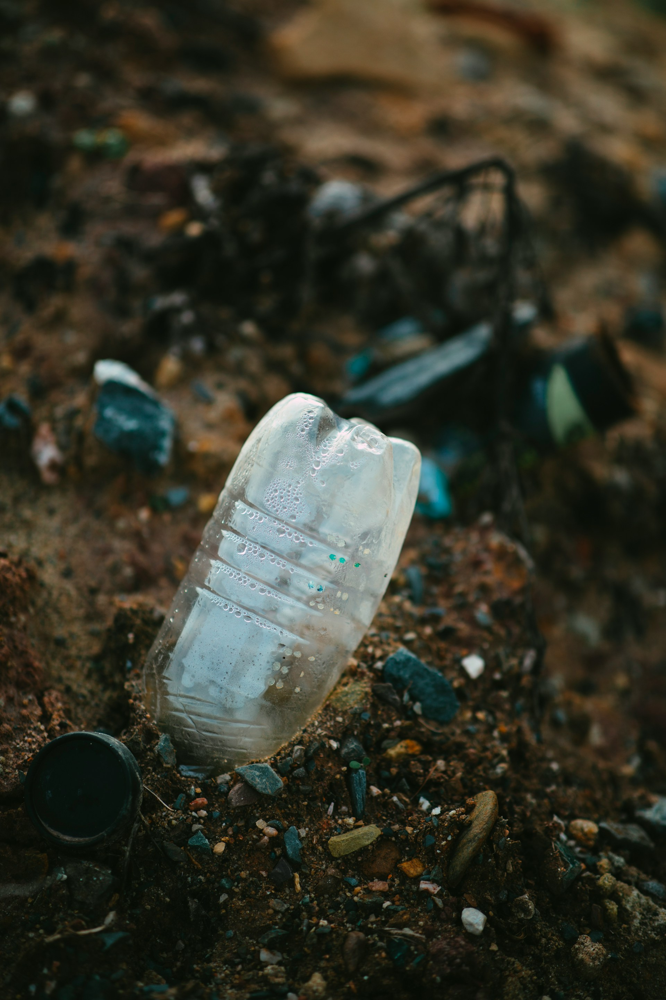

We don't just make recyclable materials — we help industry design a circular economy for plastic. Rethink, recycle, re-make, repeat.
Every structure we produce is engineered to be recovered and used again. Open any material for the full breakdown and applications.
Instead of take–make–dispose, we extend the cycle: collect, recycle, re-make — reducing the virgin polymer entering the system and reusing what's already here.
Real, measurable progress toward a circular economy for plastic — recorded, not rounded up.
We have been successful in winning many awards for sustainability and sustainable products, in both the local and global arena.
Manufacturers and growers who have committed to recycled and biodegradable packaging with us.